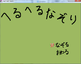
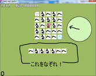
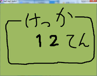

簡単爽快アクションパズル。仮公開。
SkyDriveからダウンロード



Windows2000以上ぐらい。一応D+SDLを使っているので他プラットフォー ムへの移植もできるはず(やってない)。ひょっとしたら古いアンチウイルスでウイルス検知されるかもしれない。
上のほうの「SkyDriveからダウンロード」をクリックしてください。 飛んだ先の上のほうの「ダウンロード」をクリックするとダウンロードで す。